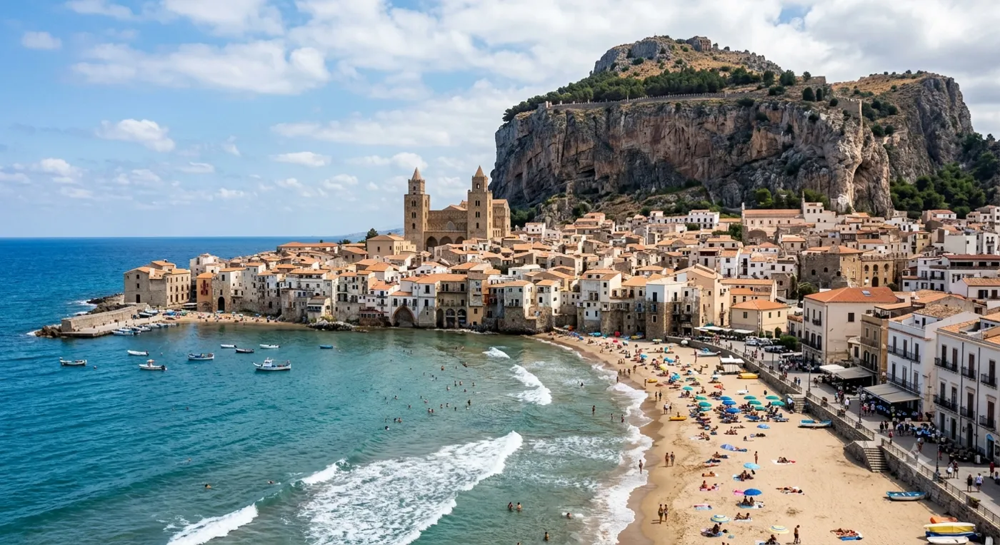

Cefalù: Notes From a Town Beneath a Very Large Rock

Cefalù has a rock the way other towns have a mayor. It is the thing that decides what happens. It is 270-odd metres of grey limestone shoved up against the sea, and the town is not built near it so much as pressed underneath it, like a note slid under a door. Everyone who arrives photographs the rock. Everyone who lives here has stopped seeing it, in the way you stop seeing your own hallway.
I have lived beneath it long enough now to have opinions. Here are four stories, in descending order of how much I can prove.
1. The cathedral that a storm may or may not have built
The official version, the one on the laminated card, goes like this: in 1130-something, Roger II — Norman, ambitious, king of a Sicily that had been Greek and Roman and Arab and was now his — was caught in a terrible storm at sea. He swore that if God spared him he would build a cathedral wherever he washed ashore. He washed ashore at Cefalù. Work began in 1131.
It is a wonderful story, and there is very little evidence for it. Historians point out, with the weary patience of people who have said this many times, that Cefalù was strategically useful to Roger regardless of the weather, and that a king who wanted a fortress-cathedral on the north coast did not require divine encouragement to build one. The storm may have been added later, by people who understood that a building is more memorable when it comes with a near-death experience.
Which, honestly, is the most Sicilian thing about the entire cathedral. Sicily does not lie, exactly. Sicily improves.
What is not improved, what is simply and overwhelmingly there, is the mosaic. Go inside, walk up the nave, and look at the apse. Christ Pantocrator, laid in gold tesserae around 1145 by Byzantine craftsmen, enormous, holding a book, looking directly at you with an expression I have never been able to name. Not stern. Not kind. Something more like attention — the feeling of being properly looked at by someone who is not going to interrupt.
People go quiet in there. Not reverent-quiet, which is a performance. Actually quiet. I have watched teenagers on a school trip walk in mid-argument and simply stop talking, without being told, and stand there with their phones down at their sides.
The cathedral is part of the UNESCO listing that covers Arab-Norman Palermo along with the cathedrals of Cefalù and Monreale — recognition of the strange, brief, extraordinary period when Norman kings ran an island using Greek administrators and Arab architects and produced buildings that look like nothing else in Europe. The card does not say that either. The card sticks with the storm.
2. The wash-house, and the woman who was not impressed
Down a set of curving stone steps off Via Vittorio Emanuele, below street level, there is a medieval wash-house — the lavatoio — where a small river called the Cefalino comes out of the rock, runs through a series of worn stone basins, and goes out under the wall to the sea. The stone is black with wet and grooved into soft dips where several centuries of women scrubbed clothes against it.
It is free, it is always open, it is about eleven degrees cooler than the street above it, and in August it is the single best place in Cefalù.
Two summers ago I took a visiting friend down there. It was thirty-eight degrees on the street. We came down the steps into the cold and the noise of the water and he said, immediately, with total sincerity, “This is the most romantic place I have ever stood.”
There was an older woman sitting on the bottom step with her sandals off and her feet in the channel, eating an ice cream. She did not look up. She said, in dialect, roughly: “It's a sink.”
And she was right. That is precisely what it is. It is a sink that some people built very well, very long ago, out of the only material available, in the only sensible spot, and then used constantly for hundreds of years until the machines came. The romance is entirely ours. We brought it down the steps with us. She had been coming there since she was a child because it is cold and there is water, which are the two things worth having in August, and the fact that it is beautiful is, to her, a coincidence that other people keep making a fuss about.
I think about her constantly. I think about her whenever I catch myself describing a wine as poetic. Somewhere there is a woman with her feet in the water saying: it's a drink.
3. Nino, and the correct number of tourists
There is a man who sells fish near the old harbour who I will call Nino, because that is not his name and he would be irritated to be quoted. Nino has a theory about tourism which he has explained to me four separate times, each time as though for the first time.
The theory is that there is a correct number of tourists, and that the correct number is slightly fewer than there are.
This is not a fixed figure. It floats. In February, when the seafront is empty and the wind comes straight down off the rock and three of the four restaurants on his street are shut, the correct number is considerably more than there are. In the second week of August, when you cannot walk the length of Corso Ruggero in under twenty minutes and someone has parked a rented Fiat Panda in a spot that is not, in any legal or geometric sense, a spot, the correct number is dramatically fewer.
But at no point — and I have checked, repeatedly, over years — has the number ever been exactly right.
I asked him once whether he had considered that this might be a flaw in the theory rather than a feature of the tourists. He looked at me for a long moment, the way you look at someone who has said something too stupid to correct, and went back to icing his fish.
He was right too, obviously. Everyone in this town is right and it is exhausting. Nino's theory is not about arithmetic. It is a way of saying that a place which is loved by strangers is never quite yours, and is also, inconveniently, only affordable because strangers love it. He has to hold both of those at once, every day, for his whole life. Under those conditions I would also develop a theory.
4. The week the town stops performing
Here is the thing nobody puts in the guidebooks, so I will put it here.
Somewhere in the first half of November — the exact date moves, and locals will argue about it — Cefalù stops performing. It is not a festival. Nothing is announced. There is simply a Tuesday when you walk down to the seafront and find that the plastic menus in six languages have gone from the tables, and the man who has spent five months saying “hello-my-friend-very-good-fish” says nothing at all, and the beach is a beach instead of a floor plan.
The light in November here is a different substance. Low, gold, coming in almost sideways off the water, hitting the ochre and rose walls of the old town at an angle they are clearly not used to. The rock goes purple at about four o'clock. Old men return to benches they have not been able to reach since June and sit on them with the specific, radiating satisfaction of people repossessing property.
And the town gets loud in a completely different register — not the loud of a crowd, but the loud of a small place where everyone knows each other and no longer has to be polite in a second language. Doors open. Kids ride bikes down the middle of Corso Ruggero. Somebody's television is audible from the street.
This is also, not coincidentally, when the wine gets interesting. The new vintage from the hills behind us starts arriving. The growers come down from the Madonie because they finally have an afternoon free, and they sit at the long table and complain about the harvest, which they will do whether it was good or bad, because complaining about the harvest is how you say I am still doing this.
If you can only come to Cefalù once, come in August. It is spectacular in August and you should see it doing its full performance, with the sea like a swimming pool and the 'ntinna a mare — the greased pole run out over the water during the Festa del Santissimo Salvatore, an event whose entire purpose is watching young men fall into the harbour in front of the whole town.
But if you can come twice, make the second one November. That is when you find out what the place is like when it isn't being looked at.
Where the cellar comes into it
We are on Via Gibilmanna, a short walk up from the old town, which is deliberate. Down there the streets belong to whoever is passing through. Up here it is quieter, and the door is heavy, and once you are inside with a glass in front of you the conversation tends to turn into the sort of thing I have written down above.
That is genuinely the whole business model. We pour Sicilian wine and people tell each other things. If you want the wine part explained properly, we wrote a guide to tasting without becoming insufferable. If you want to see where these bottles actually come from, the seasonal calendar is the honest version of the year.
And if you are here in the first half of November, come and find us. We will tell you which Tuesday it was.
Come up the hill for a glass
Divino sits on Via Gibilmanna, above the old town. Small tastings, Sicilian bottles, and a long table that has heard all of these stories more than once.
Book a tasting